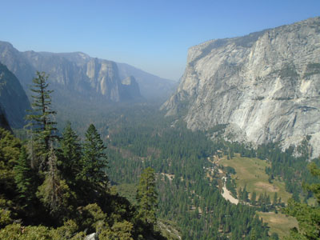
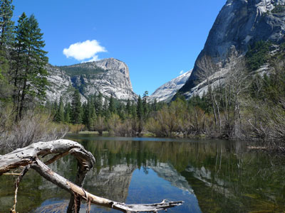
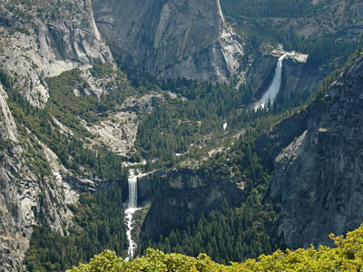
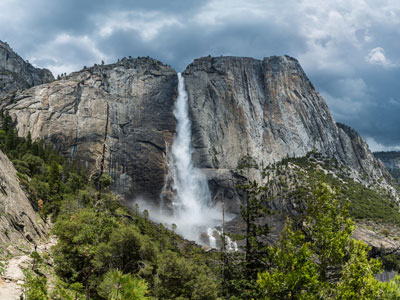

Glacial valley renowned for its natural environment and is regarded as the centerpiece of Yosemite National Park, attracting visitors from around the world.
General Information
- Pet Policy:
- Leashed pets are allowed on paved roads, sidewalks and bike paths and in developed areas
Pets are not allowed on unpaved trails, shuttles or in lodging - Fees:
- Private Vehicle: $35 (valid for 7 days)
Motorcycle: $30
Pedestrian/Bicycle: $20 per person
Vehicle reservations may be required during peak periods - Closest Cities with Hotels:
- El Portal, 14 miles
Mariposa, 43 miles - Seasons:
- Open year-round. Waterfalls are at their peak in spring and early summer, and many are low or dry from late July or August through October. Icy conditions in some areas during the winter
- Location:
- Yosemite Valley
- Website:
- nps.gov/yose/index.htm
How to Get There
From San Francisco (189 miles): Get on US-101 S/Central Fwy. Take I-580 E, I-205 E and CA-120 E to Big Oak Flat Rd.
Overview
Yosemite Valley is the heart of Yosemite National Park, a 7.5-mile-long, mile-wide glacial valley carved by the Merced River and ancient glaciers, with granite walls rising 3,000 to 3,500 feet above the valley floor. Although it covers only about one percent of the park, it is where the vast majority of visitors spend their time, and it holds many of the most famous natural landmarks in the United States, including El Capitan, Half Dome and Yosemite Falls, the tallest waterfall in North America.
People come to Yosemite Valley to stand beneath its sheer cliffs and thundering waterfalls, wander its peaceful meadows along the Merced River, and take in iconic views made famous by photographers such as Ansel Adams. The valley floor, at about 4,000 feet, is home to Yosemite Village, historic lodges, campgrounds, restaurants and a free shuttle system, making it the park’s main base for sightseeing, hiking, rock climbing and exploring. It is at its most spectacular in spring, when snowmelt sends the waterfalls to their peak flow.
Sightseeing and Scenic Drives
The valley is encircled by a loop of one-way roads, Northside Drive and Southside Drive, with frequent pull-offs, parking areas and viewpoints. Most visitors arriving on Wawona Road first stop at Tunnel View, the classic panorama of El Capitan, Bridalveil Fall and Half Dome. On the valley floor, popular stops include Valley View along the Merced River, El Capitan Meadow, where visitors watch climbers on the wall, Cook’s Meadow and Sentinel Bridge, with classic views of Half Dome reflected in the river, and the short paved walk to Lower Yosemite Fall. The historic Ahwahnee hotel, the Yosemite Valley Chapel and Yosemite Village are also popular stops. For views from above, Glacier Point overlooks the valley from 3,200 feet above the floor.
Hiking
Yosemite Valley offers trails for every ability level. Easy, mostly flat walks include Lower Yosemite Fall, Bridalveil Fall, Mirror Lake, Cook’s Meadow and sections of the Valley Loop Trail, which circles the valley floor. Moderate to strenuous hikes include the Mist Trail to Vernal and Nevada Falls, one of the most popular hikes in the national park system, the Upper Yosemite Fall Trail and the Four Mile Trail to Glacier Point. The most famous and challenging hike is Half Dome, a 14 to 16-mile round trip that ends with a climb up steel cables to the summit and requires a permit obtained by lottery. Many valley trails are steep, rocky and crowded in summer, so hikers should start early.
Other Activities
Yosemite Valley is considered the birthplace of modern big-wall rock climbing, and climbers from around the world come to scale El Capitan, Half Dome and hundreds of other routes, while beginners can take lessons through the park’s climbing school. Biking on the valley’s 12 miles of paved bike paths is a popular way to get around, with rentals available in summer, and rafting and floating the gentle Merced River is a favorite summer activity when water levels allow. Other activities include ranger programs, art and photography classes, evening programs, stargazing, the Yosemite Museum and Ansel Adams Gallery, and ice skating at Curry Village in winter. In February, crowds gather to watch the Horsetail Fall “firefall,” when the setting sun lights the waterfall on El Capitan a fiery orange.
Getting to Yosemite Valley
Yosemite Valley is located in the central Sierra Nevada of California, about 190 miles east of San Francisco, a drive of roughly four hours. Three main highways lead to the valley: Highway 140 through Mariposa and the Arch Rock Entrance, the lowest-elevation route and the most reliable in winter; Highway 120 West through Groveland and the Big Oak Flat Entrance; and Highway 41 from Fresno through Oakhurst and the South Entrance. In summer, Highway 120 East over Tioga Pass connects the valley to the Eastern Sierra. The nearest airports are Fresno Yosemite International (about 2.5 hours) and Merced, with larger airports in San Francisco, Oakland and Sacramento. Visitors without a car can take Amtrak to Merced and connect to YARTS regional buses into the valley. During busy periods, the park has required advance reservations to enter by vehicle, so check the National Park Service website before visiting.
Seasons
Yosemite Valley is open year-round, and each season offers a different experience. Spring (April to June) is the best time to see the waterfalls at full power, along with dogwood blooms and green meadows. Summer brings warm weather, the longest hours of shuttle service and the biggest crowds, though many waterfalls, including Yosemite Falls, slow to a trickle or dry up by late summer. Fall offers fewer crowds, cooler temperatures and colorful black oaks, bigleaf maples and dogwoods in the valley. Winter is quiet, with snow dusting the granite cliffs and occasional storms; the valley remains open, but some trails, such as the upper Mist Trail and Four Mile Trail, may close due to ice and snow, and tire chains may be required on roads into the park.
Camping and Lodging
Yosemite Valley offers a range of in-park lodging, from the historic luxury of The Ahwahnee to the motel-style rooms of Yosemite Valley Lodge near Yosemite Falls, the tent cabins and cabins of Curry Village, and the rustic, canvas-roofed units of Housekeeping Camp. Campgrounds include Upper Pines, Lower Pines and North Pines, which require reservations that often sell out within minutes, and the walk-in Camp 4, a historic climbers’ campground available through a daily or advance lottery. Outside the park, El Portal, just a few miles west on Highway 140, has the closest hotels, while Mariposa (about an hour), Groveland (about an hour), and Oakhurst and Fish Camp (about 1 to 1.5 hours) offer a wide range of hotels, inns, vacation rentals and campgrounds.
Visitor Centers
The Yosemite Valley Visitor Center in Yosemite Village is the park’s main visitor center, with exhibits on the park’s geology, history and wildlife, the orientation film “Spirit of Yosemite,” a bookstore and ranger information. Nearby, the Yosemite Museum and the reconstructed Indian Village of Ahwahnee interpret the history and culture of the area’s Native people, and the Valley Wilderness Center issues wilderness permits and bear canister rentals. Other information sites include the Happy Isles Art and Nature Center near the Mist Trail trailhead and the Yosemite Conservation Heritage Center (LeConte Memorial Lodge) near Curry Village.
Shuttles
The free Yosemite Valley Shuttle runs year-round, looping through the eastern end of the valley with stops at Yosemite Village, the lodges, campgrounds and major trailheads, including Happy Isles, Mirror Lake and Yosemite Falls. In summer, the El Capitan Shuttle adds service to the western valley, and tour buses and hiker buses connect the valley to Glacier Point and Tuolumne Meadows. Since parking in the valley fills quickly, many visitors park once and use the shuttle for the rest of the day. To reach the park, YARTS (Yosemite Area Regional Transportation System) buses run from Merced, Mariposa, Fresno, Sonora and, in summer, Mammoth Lakes and Lee Vining. See the Yosemite Shuttle System page for more information.
This article uses material from the Wikipedia articles "Yosemite Valley" and "Yosemite National Park", which are released under the Creative Commons Attribution-Share-Alike License 3.0, and information from the National Park Service "Yosemite National Park" website.
Featured Locations and Trails
Bridalveil Fall
0.5 mile roundtrip, 80 feet elevation gain, Easy
One of the most prominent waterfalls in the Yosemite at 617 ft in height and flows year round
El Capitan
Prominent granite cliff that looms over Yosemite Valley, is one of the most popular rock climbing destinations in the world

Martin Stiburek, CC BY-SA 4.0, via Wikimedia Commons; Image Size Adjusted

Four Mile Trail
9.6 miles roundtrip, 3,200 feet elevation gain, Strenuous
Trail climbs to the top of Yosemite Valley at Glacier Point with spectacular views of valley

Diliff, CC BY-SA 3.0, via Wikimedia Commons; Image Size Adjusted

Half Dome Trail
14–16.4 miles roundtrip, 4,800 feet elevation gain, Very Strenuous
Well-known rock formation named for its distinct shape making it appear like a dome cut in half

Mutineer, CC0, via Wikimedia Commons; Image Size Adjusted

Mirror Lake Trail
2 miles roundtrip, 100 feet elevation gain, Easy
Small, seasonal lake, it is the last remnant of a large glacial lake that once filled most of Yosemite Valley

James St. John, CC BY 2.0, via Wikimedia Commons; Image Size Adjusted
_(20041017435).jpg){kind=link}
Mist Trail / Vernal and Nevada Falls
5.4 miles roundtrip, 2,000 feet elevation gain, Strenuous
Popular hike offering spectacular, up-close views of two large waterfalls
Royal Arches
Trail climbs to the top of Yosemite Valley at Glacier Point with spectacular views of valley

Diliff, CC BY-SA 3.0, via Wikimedia Commons; Image Size Adjusted

Yosemite Falls Trail
7.2 miles roundtrip, 2,700 feet elevation gain, Strenuous
Steep climb with close-up views of Upper Yosemite Fall and distant views of Half Dome and other Sierra mountain peaks
Yosemite Valley Loop Trail
13 miles loop, 300 feet elevation gain, Moderate
Loop hike around Yosemite Valley through meadows, forests, and beside the Merced River
Yosemite Village
Village encompassing the primary built-up section of the Yosemite Valley as it was developed by the National Park Service